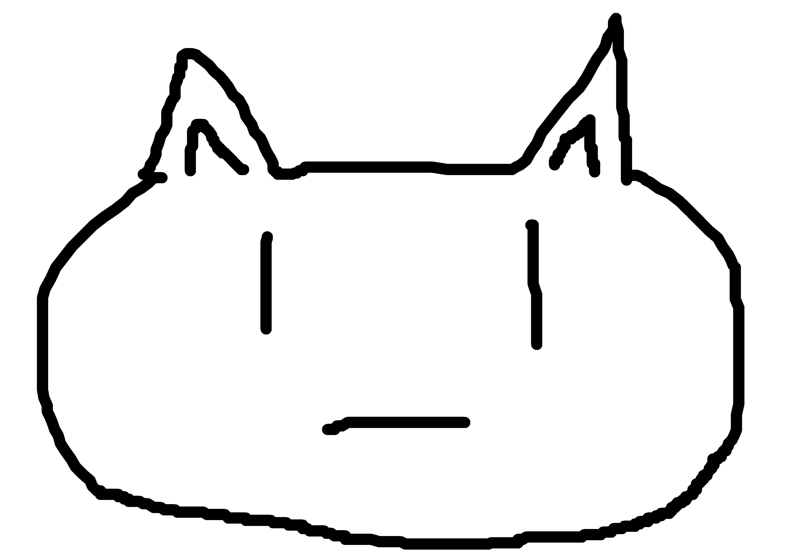
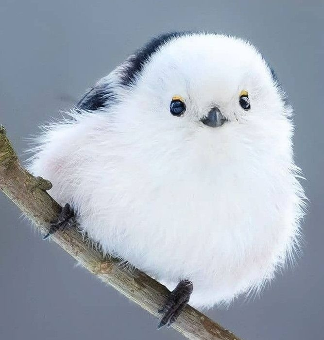
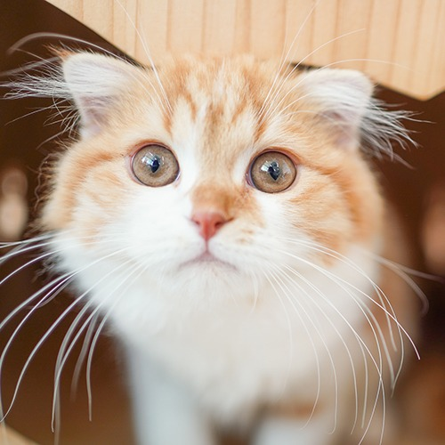
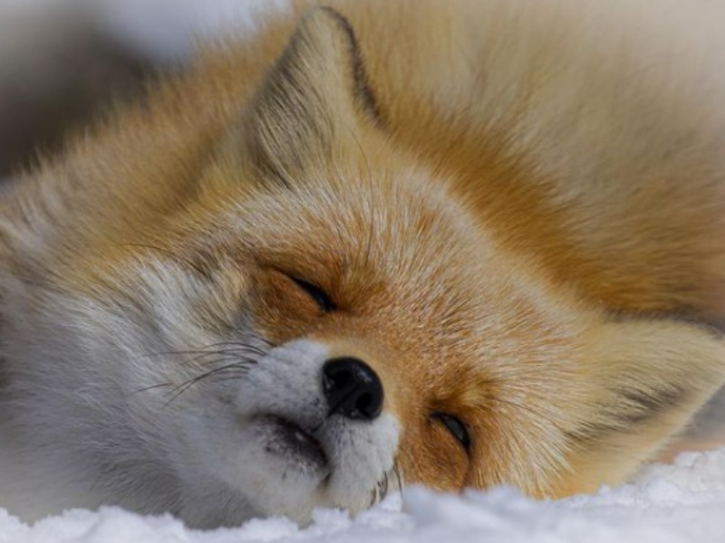
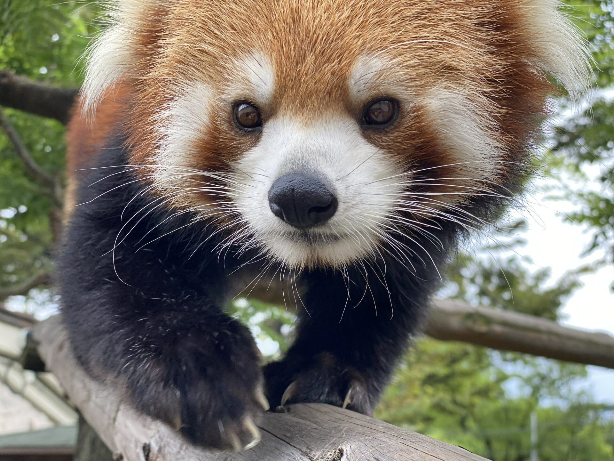
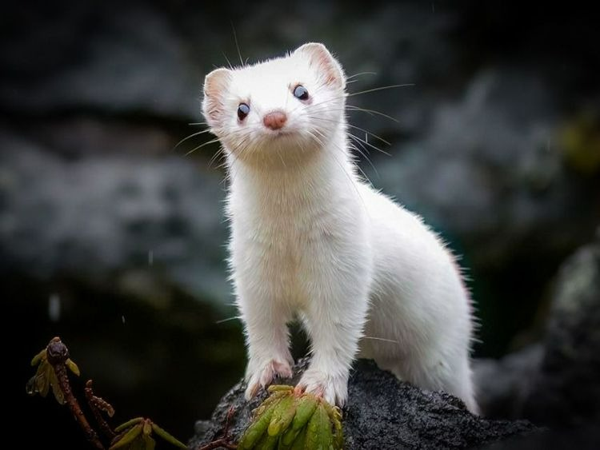
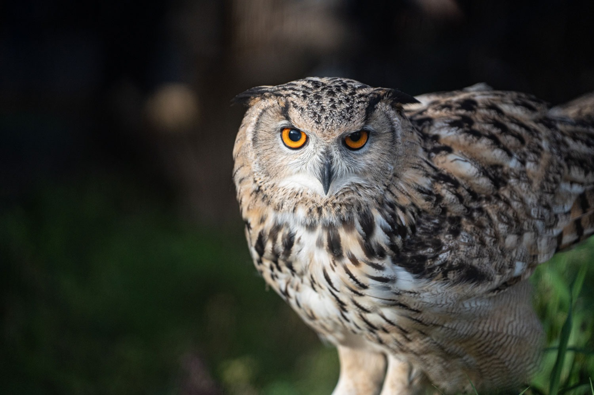
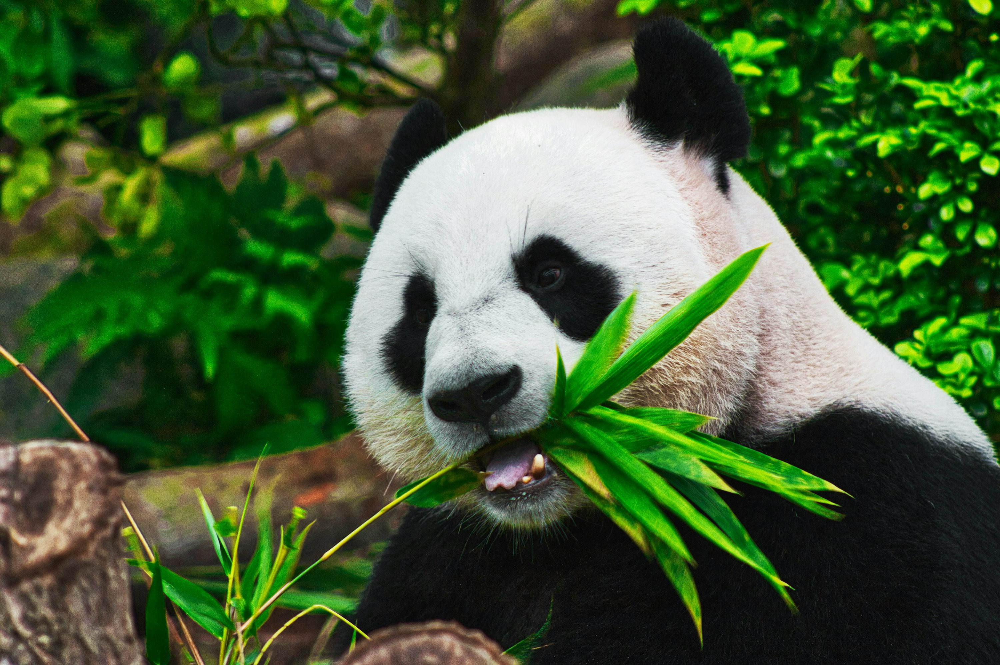

プロフィール
25JZ0113です。2006年生まれで、現在は専門学校に通っています。
出身地 : 東京都
居住エリア : 世田谷区
性格 : マイペース
趣味 : 読書・ゲーム・音楽
特技・得意なこと : 試行錯誤
苦手なこと : 運動
よくいる場所・時間の過ごし方 : 家で趣味に没頭
価値観・大切にしていること : 自分のペースを守る
現在の興味・取り組んでいること : ハーモニカ
趣味
好きなことは？
読書・ゲーム・音楽
好きなゲームは？
『Cyberpunk 2077』
好きな映画は？
『国宝』
好きな音楽ジャンルは？
エレクトロ・スウィング
好きな食べ物は？
チーズケーキ
好きな季節は？
冬
Q&A
Q1. 自分を一言で表すと？
A1. マイペースだけど好奇心旺盛なタイプです。
Q2. 休日はどう過ごすことが多いですか？
A2. 気になったことを調べたり、ゆっくり散歩したりしています。
Q3. 朝型？夜型？
A3. 完全な夜型で、静かな時間のほうが集中できます。
Q4. 気分転換の方法は？
A4. ちょっと遠くまで歩いて景色を見るとリフレッシュできます。
Q5. 影響を受けた言葉は？
A5. 「焦らず続けると必ず形になる」という言葉が励みになっています。
アルバム








